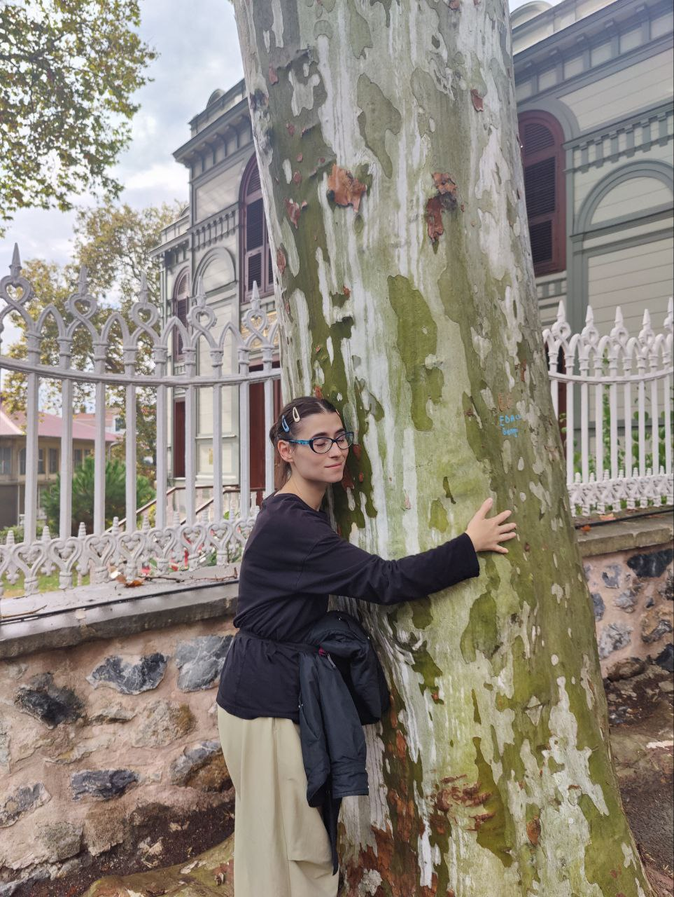
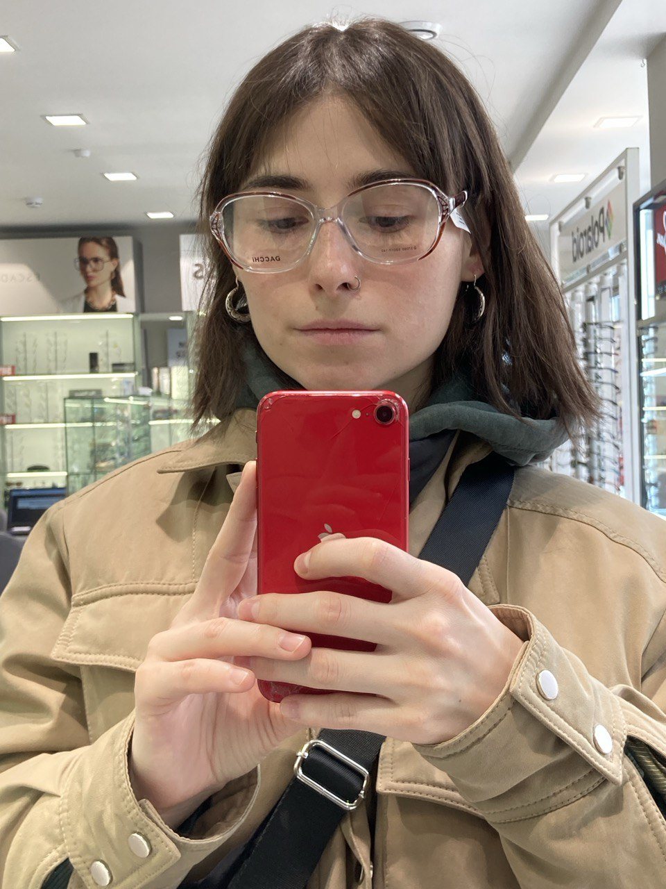

Обо мне
Люблю урбанистику, котиков и трамваи
Контакты
Email: gatsundaria@yandex.ru
Телефон: +7 (981) 811-10-39
Обнимательница деревьв
Люблю урбанистику, котиков и трамваи
Email: gatsundaria@yandex.ru
Телефон: +7 (981) 811-10-39